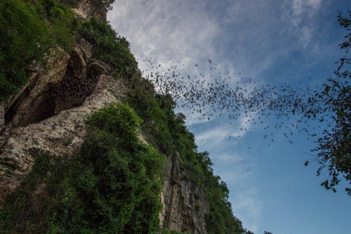
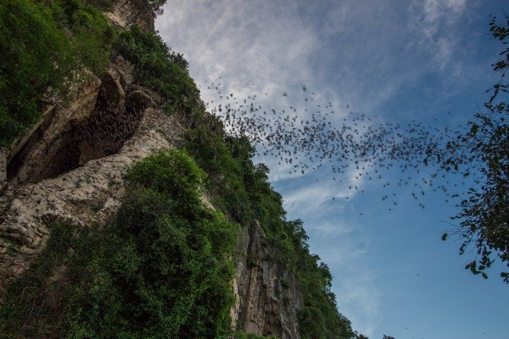

ភ្នំសំពៅ (Phnom Sampov) ស្ថិតនៅប្រហែល ១២ គីឡូម៉ែត្រពីក្រុងបាត់ដំបង។ ភ្នំនេះជាទីកន្លែងទេសចរណ៍សំខាន់ ដែលមានវត្តអារាម ព្រះពុទ្ធបដិមា និងរូងភ្នំជាច្រើន។ ពីលើកំពូលភ្នំ អាចមើលឃើញទេសភាពជុំវិញយ៉ាងស្រស់ស្អាត។ ភ្នំសំពៅក៏ល្បីដោយសាររូងភ្នំ និងហ្វូងសត្វកណ្តៀងហើរចេញពីរូងនៅពេលថ្ងៃលិច ដែលទាក់ទាញភ្ញៀវទេសចរជាច្រើន។
ភ្នំសំពៅក៏មានប្រវត្តិសាស្ត្រសំខាន់ និងល្បីដោយសាររូងកណ្តៀង ដែលនៅពេលថ្ងៃលិច មានសត្វកណ្តៀងហើរចេញជាក្រុមធំ បង្កើតទេសភាពគួរឱ្យចាប់អារម្មណ៍ និងទាក់ទាញភ្ញៀវទេសចរជាច្រើន។